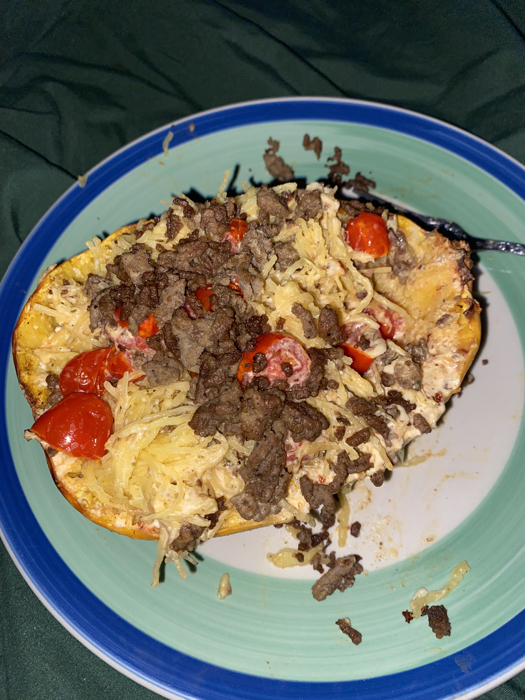

Home
Meaghan's Spaghetti Squash

Meaghan's Spaghetti Squash is an easy dish that is both pleasing to the eyes and the
taste buds. Meaghan has once again revolutionized the kitchen game by creating this
exceptionally well thoughtout and perfectly crafted meal that is friendly to all who
choose to give the meal a chance. She promises that the meal will satiate your appetite
while also invigorating your spirit and warming your heart.
Ingredients Needed
- One Squash per two servings
- Olive oil
- Boursin garlic and fine herbs cheese
- Salt and pepper
- Cajun seasoning
- Cherry tomatos
- Meat of your choice(dish does not require meat)
- Shredded mozzarella cheese
Steps to make Meaghan's Spaghetti Squash
- Cut your squash evenly in half
- Empty core of squash of seeds best as possible
- Rub olive oil into squash
- Season squash thoroughly
- Cut Boursin cheese in half and place one half in each half of squash
- Slice cherry tomatos and place in squash
- Place squash in oven at 400 degrees fahrenheit for fifty to fifty five minutes
- Cook meat of choice while squash is cooking in oven
- Remove squash from oven and apply shredded mozzarella cheese then place back in oven for five mimutes
- Remove squash from oven and mix meat in
- Enjoy!